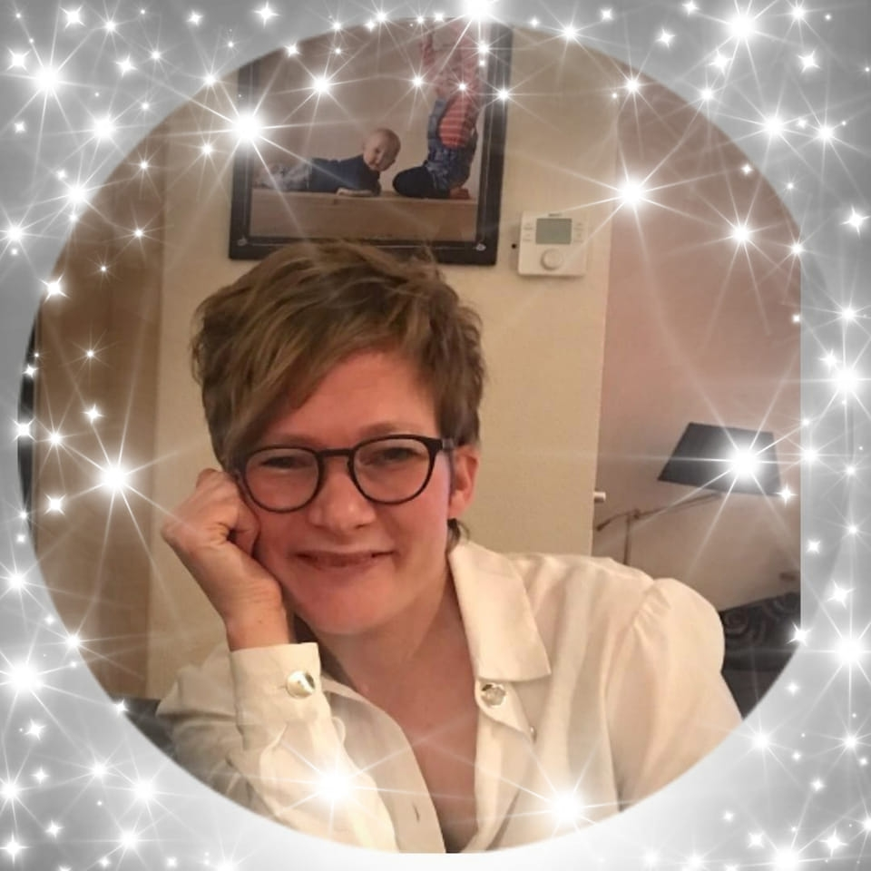

Wie ben ik?
Ik ben Marieke Onderwater, 37 jaar en moeder van 2 prachtige kinderen. Een koningsgezin, een jongen en meid van 3 en 5 jaar oud. Daarnaast werk ik nog 2 dagen in de kinderopvang.

Toen ik hoorde van Luisterkind, heb ik zelf direct een aantal keer een afstemming aangevraagd voor mijn eigen kinderen. Direct zag ik verschil, aan de energie van mijn kinderen en antwoorden van mijn vragen werden opgelost. Dit vond ik zo iets bijzonders! Na enige tijd hoorde ik van de opleiding Luisterkind, en dacht meteen: “ Ja, dit ben ik en dit wil ik worden!”
Altijd al help ik graag anderen, geef ik tips vanuit mijn eigen intuïtie. Het zit in de aard van het beestje zeggen ze dan. Nu ik deze opleiding heb kunnen afronden kan ik er mijn werk van maken. En ik ben dankbaar en blij dat ik meer moeders en vaders mag gaan helpen. Want ik weet als geen ander dat het niet altijd makkelijk is, het opvoeden van je eigen kinderen.